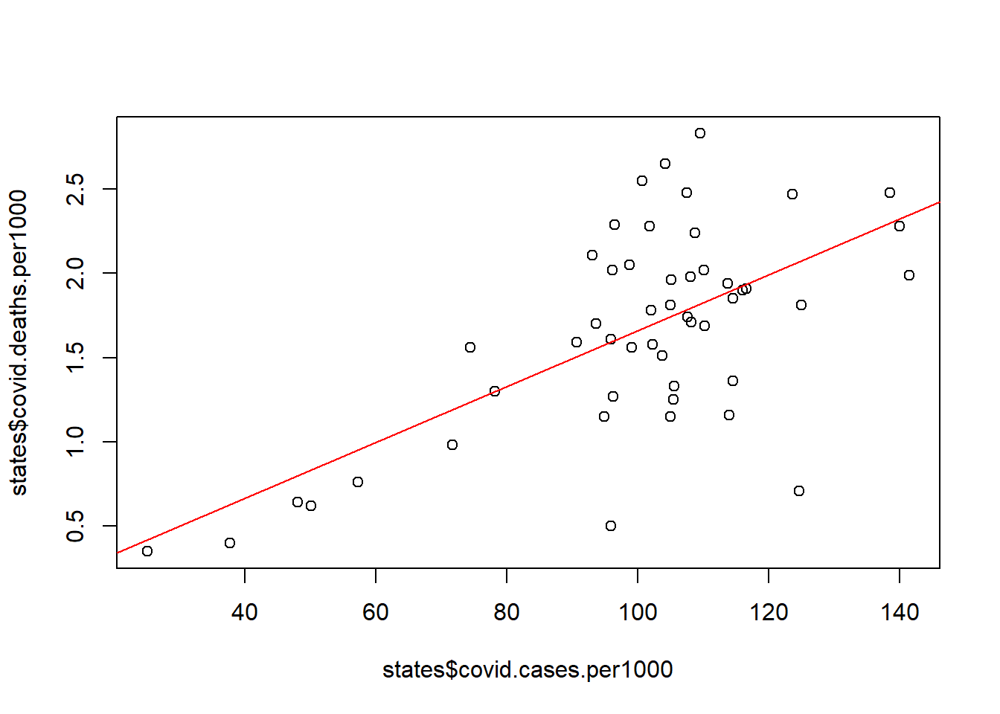

library(RCPA3)Linear Regression: Ordinary Least Squares (OLS)
Agenda:
1. Install Packages and Libraries:
New packages to install:
No new packages to install this time!
Load libraries!
2. Visualizing the Line of Best Fit
The equation for any line comes down to a basic form:
\[y = mx + b\]
A “line of best fit” models a relationship and creates a line that minimizes the “errors” (distances between data points and the line).
To view the line of best fit, we can start with a scatterplot between two continuous/interval variables…
plot(y = states$covid.deaths.per1000, x = states$covid.cases.per1000)
Notice how, as Covid cases go up, Covid deaths kind of seem to go up, too?
But at what rate exactly?
We could check the correlation coefficient to see the strength of the association…
correlateC(c(states$covid.deaths.per1000,states$covid.cases.per1000))===========================================================================
Correlation Analysis
===========================================================================
Correlation Coefficient:
0.643 It’s a moderately strong relationship (0.643), but we still don’t know the rate at which the DV outcome changes based on the IV input.
And is the relationship significant enough to help us make predictions about Covid deaths?
Let’s make a “line of best fit” to add to the plot…
plot(y = states$covid.deaths.per1000, x = states$covid.cases.per1000)
abline(lm(states$covid.deaths.per1000 ~ states$covid.cases.per1000), col="red")
Here’s what the expression is doing:
abline()adds a straight line to a plot for referencecol = "red"makes that line red (or whatever other color we want)lm(y ~ x)creates a “linear model” of y (the DV) based on x (the IV)
But we still don’t actually know what the equation is for this line! We’re especially interested in the slope…
3. Producing the Actual Linear Model
While making a scatterplot and plotting the abline() is cool for visualization, the key to a linear regression test is the linear model output. That is, we want the numbers.
So, instead of including the lm() equation in the background of a plot() function, we can look at the model values directly.
lm(states$covid.deaths.per1000 ~ states$covid.cases.per1000)
Call:
lm(formula = states$covid.deaths.per1000 ~ states$covid.cases.per1000)
Coefficients:
(Intercept) states$covid.cases.per1000
0.0001036 0.0166105 - The intercept (the \(b\) in \(y=mx + b\)) is 0.0001036
- The slope (the \(m\) in \(y=mx + b\)) is 0.0166105
- So, this is the line equation: \(y = 0.0166105x + 0.0001036\)
Notice how the line keeps going, even when it doesn’t cross a specific point? That’s what makes it a predictive model. This linear model (line of best fit) is a basic regression!
But is the relationship between X and Y significant?
4. Linear Regression Analysis
There are several names for this type of linear model (OLS, ordinary least squares, linear regression, etc.), but the linear part matters (it’s a line!).
Linear regressions always use Continuous/Interval DVs.
Linear Regression Using the lm() Function
We can certainly use the lm() function in base R to run a regression model. In fact, it comes in handy when we want to be able to store the model as an object later. We’ll run the same model, this time storing it as an object called lm1:
lm1 <- lm(states$covid.deaths.per1000 ~ states$covid.cases.per1000)Then we’ll view a summary() of the lm1 object to see the model significance and other interpretation details.
summary(lm1)
Call:
lm(formula = states$covid.deaths.per1000 ~ states$covid.cases.per1000)
Residuals:
Min 1Q Median 3Q Max
-1.36143 -0.21312 -0.03666 0.20825 1.00972
Coefficients:
Estimate Std. Error t value Pr(>|t|)
(Intercept) 0.0001036 0.2924364 0.000 1
states$covid.cases.per1000 0.0166105 0.0028538 5.821 4.71e-07 ***
---
Signif. codes: 0 '***' 0.001 '**' 0.01 '*' 0.05 '.' 0.1 ' ' 1
Residual standard error: 0.4726 on 48 degrees of freedom
Multiple R-squared: 0.4138, Adjusted R-squared: 0.4016
F-statistic: 33.88 on 1 and 48 DF, p-value: 4.707e-07- First, find the p-value at the very bottom: the model as a whole is significant!
- Next, notice the p-value (
Pr(\>\|t\|)) across from our IV: the IV itself (partial effect) is significant! - We don’t see a number of observations in this output…(hold that thought)
- But finally, check the “Multiple R-squared” value: The model explains about 41% of the variation of the DV, which is good, but not great.
Remember: we don’t need to report the “Adjusted R-Squared” in this case because we only have one IV in the model. When we only have one IV, we report the “Multiple R-Squared”; when there are multiple IVs, we have to rely on the “Adjusted R-squared.”
The model summary output doesn’t bother reporting the total number of observations, which is frustrating. But it does store that information. We just have to ask for it:
nobs(lm1)[1] 50Now we can report that the number of observations used in the model is 50 (all 50 states in the dataset!), which is big enough to draw make inferences.
Linear Regression Using the regC() Function
Alternatively, we can just use the regC() function from the RCPA3 package to run our linear regression model. The syntax is basically the same:
regC(formula = states$covid.deaths.per1000 ~ states$covid.cases.per1000)===========================================================================
Linear Regression Analysis
===========================================================================
Table: Linear Regression Coefficients
Estimate Std. Error t value Pr(>|t|)
--------------------------- --------- ----------- -------- ---------
(Intercept) 0 0.292 0 1
states$covid.cases.per1000 0.017 0.003 5.821 <.001
Table: Regression Residuals
Min. 1st Qu. Median 3rd Qu. Max.
------- -------- ------- -------- ------
-1.361 -0.213 -0.037 0.208 1.010
Additional Information:
Residual standard error: 0.4726 on 48 degrees of freedom
N: 50 (0 observations deleted due to missingness)
Multiple R-squared: 0.4138, Adjusted R-squared: 0.4016
F-statistic: 33.88 on 1 and 48 DF, p-value: 4.707e-07
Dependent variable: states$covid.deaths.per1000There’s definitely a trade off between the two methods: lm() is more versatile for advanced modeling and model storage/visualization, but the regC function can be more straightforward and comes prepackaged with some of the additional tests we’ll be running later to test the assumptions of OLS.